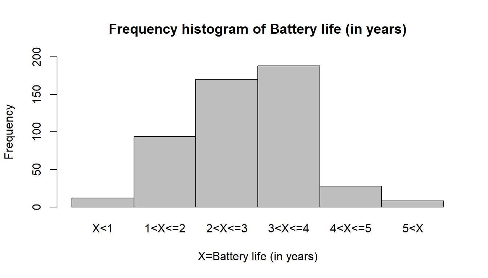

13 Chi-squared Test
13.1 Goodness of Fit Test
In this section we use a chi-square test to determine whether a population being sampled has a specific probability distribution.
13.1.1 A Multinomial Population
Multinomial Experiment
A multinomial experiment is one that possesses the following properties.
The experiment consists of a fixed number \(n\) of trials.
The outcome of each trial can be classified into one of \(k\) categories, called \(cells\).
The probability \(p_i\) that the outcome will fall into cell \(i\) remains constant for each trial. Moreover, \(p_1 + p_2 + ...+ p_k = 1\)
Each trial of the experiment is independent of the other trials.
Testing Market Shares
Company A has recently conducted aggressive advertising campaigns to maintain and possibly increase its share of the market (currently \(45\%\)) for fabric softener. Its main competitor, company B, has \(40\%\) of the market, and a number of other competitors account for the remaining \(15\%\).
To determine whether the market shares changed after the advertising campaign, the marketing manager for company A solicited the preferences of a random sample of 200 customers of fabric softener.
Of the 200 customers, 102 indicated a preference for company A’s product, 82 preferred company B’s fabric softener, and the remaining 16 preferred the products of one of the competitors. Can the analyst infer at the \(5\%\) significance level that customer preferences have changed from their levels before the advertising campaigns were launched?
We recognize this experiment as a multinomial experiment, and we identify the technique as the chi-squared goodness-of-fit test. Because we want to know whether the market shares have changed, we specify those precampaign market shares in the null hypothesis.
\[ H_0: p_1=0.45;\ \ p_2=0.40; \ \ p_3=0.15 \]
The alternative hypothesis attempts to answer our question, Have the proportions changed? Thus,
\[ H_1: At \ \ least \ \ one \ \ p_i \ \ is \ \ not\ \ equal\ \ to\ \ its\ \ specified\ \ value \]
Chi-Squared Goodness-of-Fit Test Statistic
\[ \chi^2 =\sum_{i=1}^k \frac{(f_i-e_i)^2}{e_i} \] \(Where, \ \ f_i=observed \ \ frequency \ \ and \ \ e_i=expected \ \ frequency\)
Note that, \(e_i=n*p_i\)
The sampling distribution of the test statistic is approximately chi-squared distributed with \(k-1\) degrees of freedom, provided that the sample size is large.
Test Statistic calculation
| Company | Observed frequency, \(f_i\) | Expected frequency, \(e_i\) | \((f_i-e_i)\) | \(\frac{(f_i-e_i)^2}{e_i}\) |
|---|---|---|---|---|
| A | 102 | 90 | 12 | 1.60 |
| B | 82 | 80 | 2 | 0.05 |
| Other | 16 | 30 | -14 | 6.53 |
| Total | 200 | 200 | \(\chi^2=8.18\) |
Critical value
At \(\alpha =0.05\) and for \(df=3-1=2\), \(\chi^2_\alpha=5.99\) .
Decision
Since \(\chi^2 > \chi^2_{\alpha}\) so reject null hypothesis.
Interpretation/ Conclusion
There is sufficient evidence at the \(5\%\) significance level to infer that the proportions have changed since the advertising campaigns were implemented.
Problem 14.1 Test the following hypotheses by using the \(\chi^2\) goodness of fit test. \[ H_0: p_A=0.40 ;\ \ p_B=0.40; \ \ p_C=0.20 \]
\[
H_a: At \ \ least \ \ one \ \ p \ \ is \ \ not \ \ equal \ \ to \ \ H_0 \ \ value
\]
A sample of size 200 yielded 60 in category A, 120 in category B, and 20 in category C. Use \(\alpha =0.01\) and test to see whether the proportions are as stated in H0.
Problem 14.2 Television Audiences Across Networks. During the first 13 weeks of the television season, the Saturday evening 8 p.m. to 9 p.m. audience proportions were recorded as ABC 29%, CBS 28%, NBC 25%, and independents 18%. A sample of 300 homes two weeks after a Saturday night schedule revision yielded the following viewing audience data: ABC 95 homes, CBS 70 homes, NBC 89 homes, and independents 46 homes. Test with a = .05 to determine whether the viewing audience proportions changed.
Problem 14.3 M&M Candy Colors. Mars, Inc. manufactures M&M’s, one of the most popular candy treats in the world. The milk chocolate candies come in a variety of colors including blue, brown, green, orange, red, and yellow. The overall proportions for the colors are .24 blue, .13 brown, .20 green, .16 orange, .13 red, and .14 yellow. In a sampling study, several bags of M&M milk chocolates were opened and the following color counts were obtained.
| Color | Blue | Brown | Green | Orange | Red | Yellow |
| Count | 105 | 72 | 89 | 84 | 70 | 80 |
Use a 0.05 level of significance and the sample data to test the hypothesis that the overall proportions for the colors are as stated above. What is your conclusion?
Problem 14.4 Traffic Accidents by Day of Week. The National Highway Traffic Safety Administration reported the percentage of traffic accidents occurring each day of the week. Assume that a sample of 420 accidents provided the following data.
| Day | Sun | Mon | Tue | Wed | Thur | Fri | Sat |
|---|---|---|---|---|---|---|---|
| No. of aacidents | 66 | 50 | 53 | 47 | 55 | 69 | 80 |
Conduct a hypothesis test to determine if the proportion of traffic accidents is the same for each day of the week. Using a .05 level of significance, what is your conclusion?
13.1.2 Normal population (continuous)
To test whether a variable follows normal distribution with mean \(\mu\) and variance \(\sigma^2\) we will illustrate the following example.
Problem 14.5 A random sample of 500 car batteries was taken and the life of each battery was measured. Letting X denote battery life in years, suppose that the sample revealed the following distribution of battery life:
| Life (in years) | Frequency |
|---|---|
| \(X<1\) | 12 |
| \(1<X \le 2\) | 94 |
| \(2<X \le 3\) | 170 |
| \(3 <X \le 4\) | 188 |
| \(4<X \le 5\) | 28 |
| \(5<X\) | 8 |
| Total | 500 |
Based on this data, test whether battery life follows a normal distribution with \(\mu = 2.8\) and \(\sigma^2 = 1.1^2\). Clearly state your hypotheses and use a significance level of \(\alpha = 5\%\).
Solution:
Hypotheses
H0: The battery life follows a normal distribution with \(\mu = 2.8\) and \(\sigma^2 = 1.1^2\)..
Ha:The battery life does not follow a normal distribution.
Test Statistic calculation
| Life (in years) | Probability | \(e_i=np_i\) | \(f_i\) | \(\frac{(f_i-e_i)^2}{e_i}\) |
|---|---|---|---|---|
| \(X<1\) | \(P(X<1)\) \(=P(Z<-1.64)\) \(=0.0505\) |
25.25 | 12 | 6.9530 |
| \(1<X \le 2\) | \(P(1<X \le 2)\) \(=P(-1.64<Z\le -0.73)\) \(=0.1826\) |
91.30 | 94 | 0.0798 |
| \(2<X \le 3\) | 0.3386 | 169.30 | 170 | 0.0029 |
| \(3 <X \le 4\) | 0.2902 | 145.10 | 188 | 12.6837 |
| \(4<X \le 5\) | 0.1149 | 57.45 | 28 | 15.0966 |
| \(5<X\) | 0.0228 | 11.40 | 8 | 1.0140 |
| \(\chi^2=35.83\) |
Critical value
At \(\alpha=0.05\) , and for \(df\)=6-1=5, \(\chi^2_{\alpha,5}=11.1\)
Decision
Since \(\chi^2>\chi^2_{\alpha,5}\) so we can reject the null hypothesis.
13.1.3 Uniform distribution (continuous)
To test whether a variable follows uniform distribution between \(a\) to \(b\) we will illustrate the following example.
Problem 14.6 Suppose X, the amount of time a person stays in bed after their alarm goes off, is uniformly distributed between 5 and \(b\) minutes.Over 100 days, how long they slept past their alarm (X) were recorded (in minutes). However, only the number of days for which X within certain ranges was reported in the table below:
| Time stays in bed | No. of days |
|---|---|
| 5<X<7 | 40 |
| 7<X<8 | 22 |
| 8<X<10 | 38 |
| Total | 100 |
Based on the data given above, test whether \(b\) is equal to 10. Clearly state your hypotheses and use a significance level of \(\alpha = 5\%\).
Solution:
If the X, the amount of time a person stays in bed after their alarm goes off, is uniformly distributed between 5 and \(b\) minutes then the data will fit the uniform distribution with parameter 5 to b=10 minutes. So following hypotheses can be formed:
Hypothesis
H0: The amount of time a person stays in bed after their alarm goes off, is uniformly distributed between 5 and \(b=10\) minutes
Ha: The amount of time a person stays in bed after their alarm goes off, is NOT uniformly distributed between 5 and \(b=10\) minutes.
Test statistic calculation
If \(X\sim U(5,10)\) then PDF, \[f(x)=\frac{1}{10-5}=\frac{1}{5};\ \ 5<x<10\]
So, \(P(5<X<7)=(7-5)*\frac{1}{5}=\frac{2}{5}\) and so on
| Bed time (in mins) | \(f_i\) | \(p_i\) | \(e_i=np_i\) | \(\frac{(f_i-e_i)^2}{e_i}\) |
|---|---|---|---|---|
| 5<X<7 | 40 | \(\frac{2}{5}\) | 40 | 0.00 |
| 7<X<8 | 22 | \(\frac{1}{5}\) | 20 | 0.20 |
| 8<X<10 | 38 | \(\frac{2}{5}\) | 40 | 0.10 |
| Totals | 100 | \(\chi^2=0.3\) |
Critical value At \(\alpha=5\%\) and \(df=3-1=2\), \(\chi^2_{\alpha,2}=5.99\).
Decision Since, \(\chi^2<\chi^2_{\alpha,2}\) so we cannot reject null hypothesis. Hence the amount of time a person stays in bed after their alarm goes off, is uniformly distributed between 5 and \(b=10\) minutes.
Problem 14.7 Suppose Y , the number of minutes they are late to work is uniformly distributed between 0 and \(b\) minutes. Over 100 days, how late they were to work (Y ) were recorded (in minutes). However, only the number of days for which Y fell within certain ranges was reported in the table below:
| Time late to work | No. of days |
|---|---|
| 0<Y<2 | 39 |
| 2<Y<3 | 25 |
| 3<Y<5 | 36 |
| Total | 100 |
Based on the data given above, test whether \(b\) is equal to 5. Clearly state your hypotheses and use a significance level of \(\alpha = 5\%\).
13.2 Test for Independence (Categorical Data)
To determine whether two categorical variables are independent summarized in a contingency table we use Chi-squared test of association /independence. That is, to determine whether the distribution of one categorical variable is the same across all categories of the other categorical variable.
Consider the following example:
In an experiment to study the dependence of hypertension on smoking habits, the following data were taken on 180 individuals:
| Non-smokers | Moderate Smokers | Heavy Smokers | |
|---|---|---|---|
| Hypertension | 21 | 36 | 30 |
| No hypertension | 48 | 26 | 19 |
Test the hypothesis that the presence or absence of hypertension is independent of smoking habits. Use a 0.05 level of significance.
Solution: We have to test the following hypothesis:
\(H_0:The \ \ column\ \ variable\ \ is\ \ independent\ \ of\ \ the\ \ row\ \ variable\)
\(H_a:The \ \ column\ \ variable\ \ is\ \ not\ \ independent\ \ of\ \ the\ \ row\ \ variable\)
Test statistic
\[ \chi^2=\sum_{i=1}^r\sum_{j=1}^c \frac {(f_{ij}-e_{ij})^2}{e_{ij}} \]
The sampling distribution of the test statistic is approximately chi-squared distributed with \((r-1)\times (c-1)\) degrees of freedom, provided that the sample size is large.
Note
\(f_{ij}=\) Observed frequency of \((i,j)^{th}\) cell;
\(e_{ij}=\)Expected frequency of \((i,j)^{th}\) cell=\(\frac{Row \ \ i \ \ total \times Column \ \ j \ \ total}{Sample \ \ size (n)}\)
Table: Contingency table with Row total and Column total
| Non-smokers | Moderate Smokers | Heavy Smokers | Row Total | |
|---|---|---|---|---|
| Hypertension | 21 | 36 | 30 | 87 |
| No hypertension | 48 | 26 | 19 | 93 |
| Column Total | 69 | 62 | 49 | 180 |
For example,
\[ \boldsymbol {e_{11}=\frac{87\times69}{180}} \]
Chi-square Statistic calculation
| Observed, \(f_i\) | Expected, \(e_i\) | \(\frac{(f_i-e_i)^2}{e_i}\) |
|---|---|---|
| 21 | 33.35 | 4.57 |
| 36 | 29.97 | 1.21 |
| 30 | 23.68 | 1.68 |
| 48 | 35.65 | 4.28 |
| 26 | 32.03 | 1.14 |
| 19 | 25.32 | 1.14 |
| \(\chi^2=14.46\) |
Critical value At \(\alpha =0.01\) and with \(df=(2-1)*(3-1)=2\), \(\chi^2_\alpha =9.21\)
Decision Since \(\chi^2 > \chi^2_\alpha\) so reject the null hypothesis.
Interpretation/conclusion There is sufficient evidence at the \(5\%\) significance level to infer that the smoking habits (column variable) is not independent of the the presence or absence of hypertension (row variable), rather the two variables are associated.
Problem 14.8 Suppose X, the amount of time a person stays in bed after their alarm goes off, is uniformly distributed between 5 and 10 minutes. Also, suppose Y , the number of minutes they are late to work is uniformly distributed between 0 and 5 minutes. Over 100 days, how long they slept past their alarm (X) and how late they were to work (Y ) were recorded (in minutes). However, only the number of days for which X and Y fell within certain ranges was reported in the table below:
| 5<X<7 | 7<X<8 | 8<X<10 | |
|---|---|---|---|
| 0<Y<2 | 18 | 9 | 12 |
| 2<Y<3 | 9 | 4 | 12 |
| 3<Y<5 | 13 | 9 | 14 |
Based on the data above, test whether X and Y are independent (that is, whether the rows and columns are independent). Clearly state your hypotheses and use a significance level of \(\alpha=5\%\) .
Problem 14.9 The contingency table shows the results of a random sample of students by the location of school and the number of those students achieving basic skill levels in three subjects. At \(\alpha = 0.01\), test the hypothesis that the variables (Subject vs. Location) are independent.
| Reading | Math | Science | |
|---|---|---|---|
| Urban | 43 | 42 | 38 |
| Suburban | 63 | 66 | 65 |
Problem 14.10 TheAthlete Injury Data by Stretching Status is given below:
| Athlete has: Stretched | Athlete has: Not stretched | |
|---|---|---|
| Injury | 18 | 22 |
| No injury | 211 | 189 |
Do these data suggest that the result of the athlete’s activity (Injury vs. No injury) is statistically independent of whether the athlete stretched prior to the activity (Stretched vs. Not stretched)?